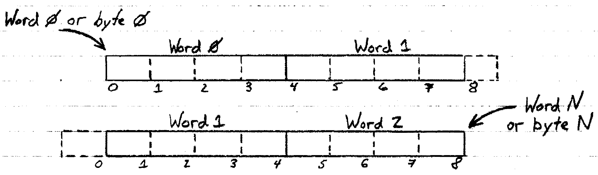
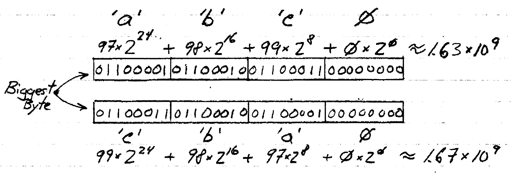

Counting from 1 to N
What is the first natural number? Well, when phrased this way the answer is clearly 1. The Romans knew this, they didn't even have a numeral for zero! [1] Yet today most programming languages, and digital systems in general, start their numbering at zero.
Edsger Dijkstra described this problem very well in his note "Why numbering should start at zero". However I respectfully disagree with his conclusion, it is often more natural to define the set a posteriori ℕ={1, 2, 3, 4,...} than to start counting at zero with {0, 1, 2, 3,...}.
Of course information wise, both are equivalent--if you have 256 bytes of memory available in RAM, you can uniquely address each location by {0, 1, 2, ... , 254, 255} or {1, 2, 3, ... , 255, 256} and in binary 0 and 256 have the same representation within 8-bits. Zero, represented by 00000000 is not discernable from (1)00000000, which is Two Fifty Six.
I think starting at 1 is better because if you have n elements, then the index of the last elements tells you how many there are and accessing the nth memory location is not out-of-bounds. However C starts counting at zero and always identifies larger blocks of data from the zeroth byte.
To have a successful systems language use 1-to-N indexing, you have to think about the computer architecture as addressing multibyte words from the right, not the left. So a 4-byte word would be pointed to by its 4th byte and the language could support type casting of different size structs by preserving the location of the Nth byte, even as the value of N changes.
32-bit Words Addressed from the Right vs the Light
A pragmatic advantage of a right vs left memory model is easy type casting for big-endian byte order, which is the character/digit order English speakers read and write in. It is also the byte order of the internet. (Network Effects)
Big-endian ordering matches alphabetical order; with ASCII encoding, "abc0" indeed evaluating to a value less than "cba0"
A right edge, or 1-to-N memory model would also remove the dissonance between array and list indexing present in most languages and might reduce memory access errors associated with location N.
But what about real world applications? In digital signal processing time usually starts at zero, not one (Much to the frustration of engineers using MATLAB).
Exploring this further is one of my current projects, and so far there are some potentially promising results.
The first is just cognitively nice: if you have N datapoints starting at 1 (dimensionless) and take this to approximate a real time signal with segments measured from the right, then doubling the number of datapoints can take you twice further towards infinity or close half the distance to zero.

Second, simple geometric series becomes sort-of invertible if you start at 1 and negate the result. This also leads to a strange situation where convolving with z^n from 0 to ∞ (i.e. the unilateral Z-transform) produces the same result as correlating with z^n from 1 to ∞ (Although the ROCs go in opposite directions).
If the last paragraph hardly made any sense, well it doesn't yet to me either. But stay tuned for more!